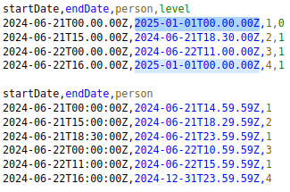

Imagine you are a worker of on call system
And you are always attending all the calls because you are the most
expertise worker.
But there is another workers, with less experience, that could attend
some call, and let you deal with the most difficult ones.
You need improve the system to choose the accurate operator.
Don’t believe everything you think
Imagine this set of data for on-call problem
initial data
Do you think the input should produce this output in an algorith?
but always think everything
Or maybe sould be..

final data
Here is, where monorepo came to the rescue, and Bazel will build the
solution.
This is a challenge, to your mind, to your self. Retrace the steps,
find the path, show the possibilities
Are you interesting in knowing more?
Go
here
For the very, very impacients
Use the data, implement the algorithm, test the result, beat another
algorithm with new data, or even assure the correctness of the data,
maybe the data are wrong, and the other algorithms fail.